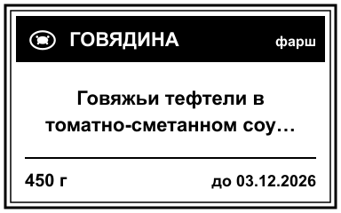
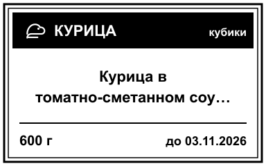
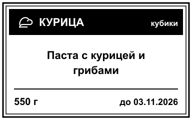
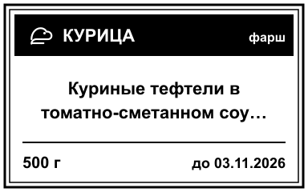
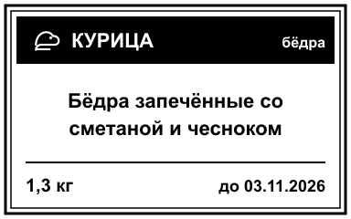
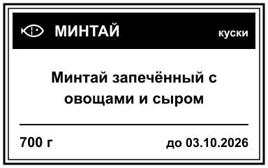

Этикетки заготовок · 24 шт · 50×30 мм (384×240)
Скачайте PNG и печатайте в NIIMBOT как изображения, либо используйте prep-labels.xlsx.
Говядина · соломка · 600 г
Говядина · соломка · 600 г
Говядина · кубики · 600 г
Говядина · кубики · 700 г
 Говядина · кубики · 600 г
Говядина · крупный кусок · 450 г
Говядина · крупный кусок · 700 г
Говядина · фарш · 500 г
Говядина · кубики · 600 г
Говядина · крупный кусок · 450 г
Говядина · крупный кусок · 700 г
Говядина · фарш · 500 г

Говядина · фарш · 450 г

Курица · кубики · 600 г

Курица · кубики · 550 г
Курица · соломка · 600 г
Курица · отбивные · 600 г
Курица · фарш · 600 г

Курица · фарш · 500 г
 Курица · ножки · 1 кг
Курица · ножки · 1 кг
Курица · крылья · 1,5 кг
Курица · ножки · 1 кг
Курица · ножки · 1 кг
Курица · крылья · 1,5 кг

Курица · бёдра · 1,3 кг
Форель · куски · 900 г
Форель · куски · 700 г

Минтай · куски · 700 г
Креветки · целые · 450 г
Креветки · целые · 450 г